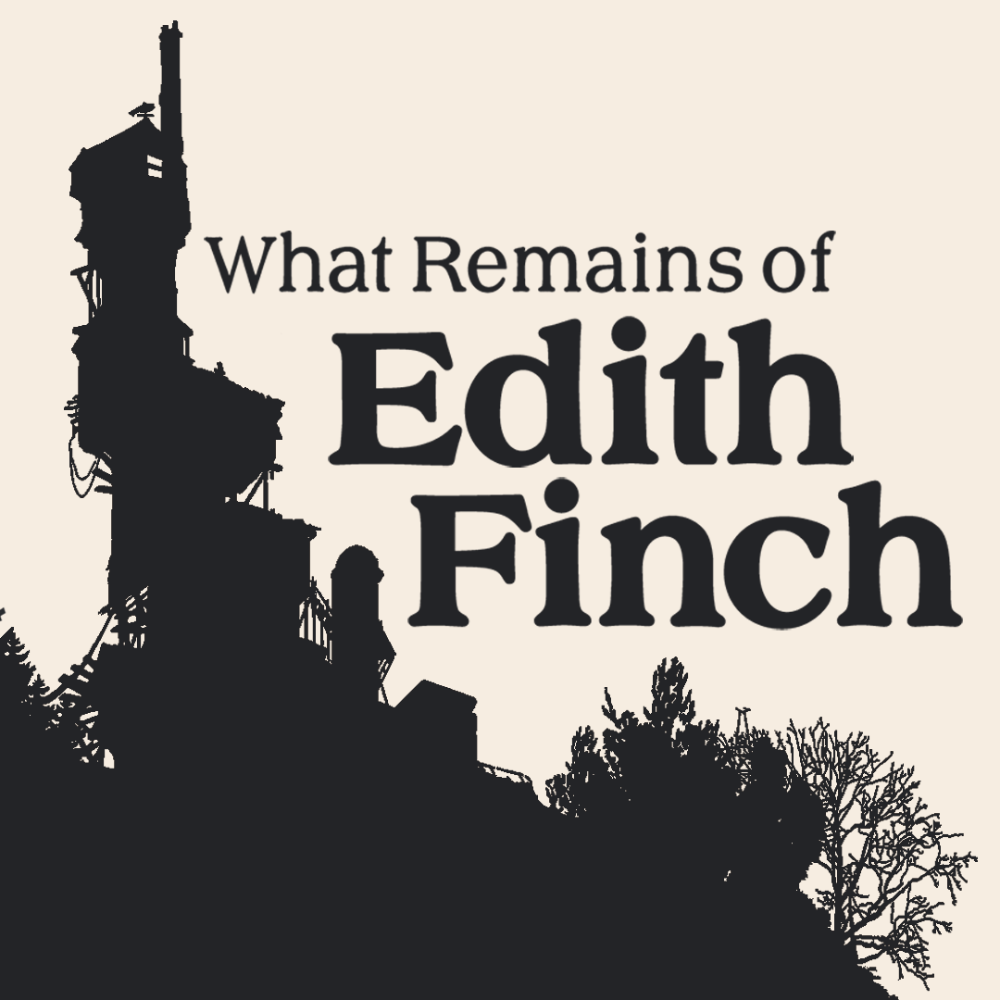

The table of contents for my main page
Wikipedia has lots of information on What remains of Edith Finch.
My page the psychology of "What remains of Edith Finch" has less canon information and what I wrote is pure speculation and my thoughts on the game.
The photos I got for Molly are from her Wiki page on what remains of Edith Finch
The photos I got for Barbara are from her Wiki page on what remains of Edith Finch
The photos I got for Calvin are from his Wiki page on what remains of Edith Finch
The photos I got for Gregory are from his Wiki page on what remains of Edith Finch
The photos I got for Gus are from his Wiki page on what remains of Edith Finch
The photos I got for Sam are from his Wiki page on what remains of Edith Finch
The photos I got for Milton are from his Wiki page on what remains of Edith Finch
The photos I got for Walter are from his Wiki page on what remains of Edith Finch
The photos I got for Lewis are from his Wiki page on what remains of Edith Finch
The photos I got for Edie are from her Wiki page on what remains of Edith Finch
The photos I got for Dawn are from her Wiki page on what remains of Edith Finch
The photos I got for Edith are from her Wiki page on what remains of Edith Finch
I also got a few photos from this tumblr page
And I got some pictures from here
